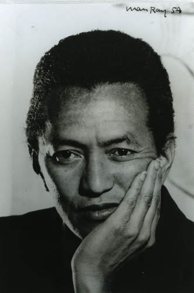

The others in art is about showing artist from the past or future and educated the young minds on what these artist do and show there work for what it meant to them.

Art of work that will be remebered for years to come and some have passed away but there journey yet to be over its just starting.